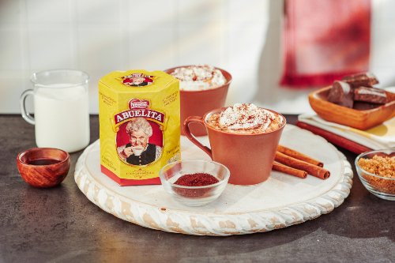

Abuelita's Hot Chocolate

Description
Abuelita's Hot Chocolate brings back the traditional favorite with a hint of cinnamon. This traditional drink is made with milk, cinnamon, and a whole tablet of chocolate.
Served best with pan dulce, before bed or in place of morning coffee. Ready in 10 minutes.
Ingredients
- 1 Abuelita's Hot Chocolate Tablet
- 2 Cups Water
- 1 Cup Milk
- 2 Cinnamon Sticks
- 1/2 Cup Sugar
Optional
- Whipped Cream
- 1 tsp Ground Cinnamon
Steps
- Bring 2 cups of water to a boil, in a small/medium size pot.
- Once boiling, stir in the tablet of chocolate until completely melted.
- Add in the milk and change heat to a low simmer
- After 2 minutes, add sugar and cinnamon sticks, stirring occasionally
- Turn off heat and allow 5 minutes of cooling time
Optional
- Add whipped cream and ground cinnamon as garnish